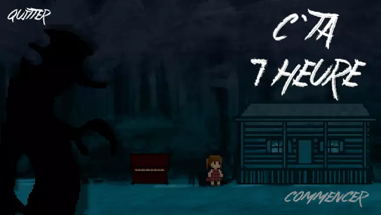

projects
augusto pinheiro
home
projects
contact
home
projects
contact
all of my best projects
tory
A 2D apocalypse shoot'em up based on Generations, a story by Alfred Hayden - Unity

C'TA 7 HEURE
A pixel art, horror platformer game, made for the Valleyfield 2020 game jam. - Unity
Flow Fields
A representation of a dynamic vector field - Processing